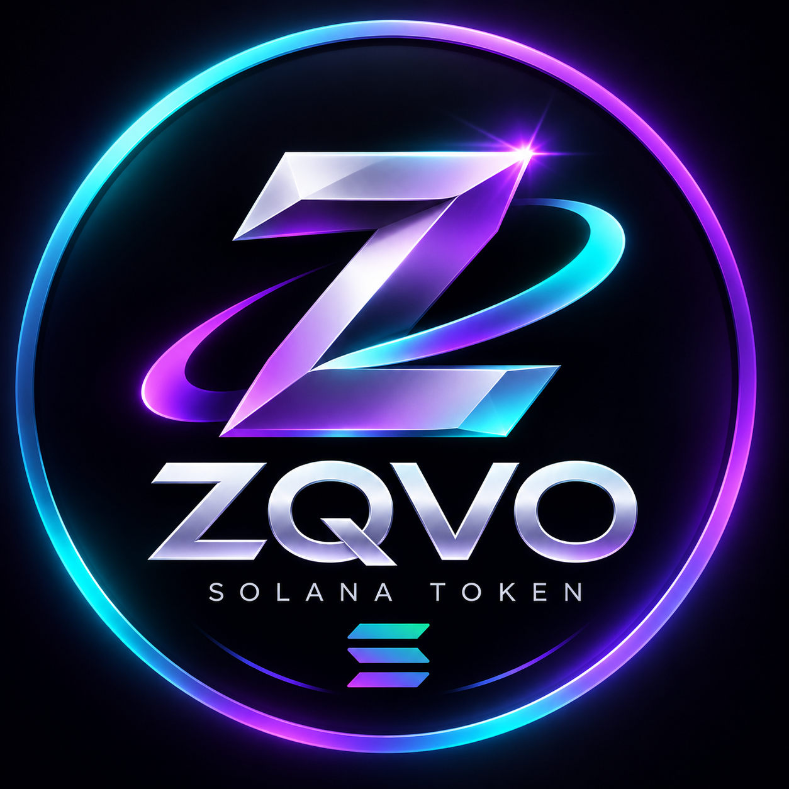

Understand Solana.
Explore with clarity.
ZQVO is an early-stage initiative to make public blockchain data easier to inspect, understand and use. Explore token supply and authority information through a read-only interface.
Explore the prototypeDevelopment roadmap
Accessible blockchain intelligence
Public blockchain records are powerful but often difficult to interpret. Our goal is to make token metadata, supply and authority information accessible to users and developers without requiring a wallet connection.
Transparency
Show verifiable on-chain facts and distinguish them from project plans.
Why Solana?
Solana provides a public ledger and a developer ecosystem suited to responsive data tools.
Read-only by design
The prototype never requests a private key, wallet signature or transaction.
Token explorer
Inspect any Solana mint address using public RPC. Results depend on endpoint availability.
Ready. Select Read on-chain data to query Solana.
Not loaded
Not loaded
Not loadedNot loadedRecent signatures
Not loaded
ZQVO on Solana
Not confirmed
No market or liquidity is represented by this site.
Tools we aim to build
Explorer
Mint account and recent signature lookup.
Analytics
Historical supply and activity visualization.
Security
Authority and token configuration explanations, not audit guarantees.
Developer API
Documented endpoints and reusable data tooling.
Alerts & Portfolio
Read-only wallet tracking and configurable alerts.
Intelligence
Explore explainable summaries of public chain data.
Milestones, not promises
Foundation
Publish source, verify prototype queries, document setup and collect feedback.
Core data
Implement robust RPC handling, tests and authority interpretation.
Developer tools
Build documented API endpoints and example integrations.
Research & expansion
Evaluate alerts, historical analytics and usability improvements.
Future milestones depend on resources, testing and user feedback. No funding or partnerships are claimed.
Community channels
Telegram
X / Twitter
Discord
Frequently asked questions
Is ZQVO Analytics finished?
No. This is an early prototype; other products are planned.
Do I need a wallet?
No. The explorer reads public information only.
Is the token available to buy?
This website does not verify or provide a trading market.
Is the project audited?
No independent audit is claimed.